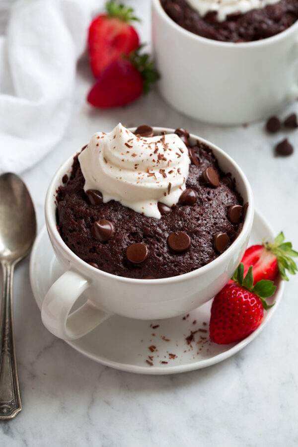

Home
Chocolate Mug Cake

Description
A rich, moist, and ultra-chocolatey cake made in just 5 minutes using a mug and a microwave. Perfect for quick cravings—no oven needed! Enjoy it as is or top with ice cream or whipped cream for extra indulgence.
Ingredients
- 3 Tbsp all-purpose flour
- 3 Tbsp granulated sugar
- 2 ½ Tbsp unsweetened cocoa powder
- 1 pinch baking soda
- 2 Tbsp mayonnaise (good quality like Hellman’s)
- 3 Tbsp whole milk
- ¼ tsp vanilla extract
- 1 Tbsp semi-sweet chocolate chips (optional)
Steps
- Mix dry ingredients: In a microwave-safe mug (at least 11 oz.), whisk together flour, cocoa powder, sugar, and baking soda.
- Add wet ingredients: Stir in milk, vanilla extract, and mayonnaise until smooth.
- Add chocolate chips: Sprinkle chocolate chips on top if using.
- Microwave: Cook on high for 1 to 1½ minutes until just set in the center.
- Cool & serve: Let it cool for a minute before enjoying. Top with ice cream or whipped cream if desired.